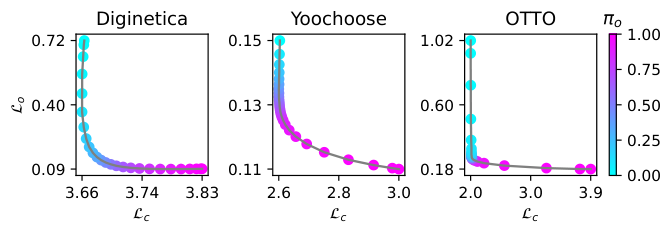

Pareto Front Approximation for Multi-Objective Session-Based Recommender Systems (面向多目标会话推荐系统的帕累托前沿近似)
- 会议/期刊: RecSys 2024 (18th ACM Conference on Recommender Systems, Bari, Italy)
- 作者与机构: Timo Wilm, Philipp Normann, Felix Stepprath（OTTO (GmbH & Co KG), Hamburg）
- 推荐链路定位: 召回（会话 Next-Item 预测）/ 端到端多目标打分
- 研究方向: 多任务学习与列表级重排 / 序列与会话推荐
- 论文原文: https://arxiv.org/abs/2407.16828v3
- 开源代码: https://github.com/otto-de/MultiTRON
TL;DR (1分钟核心速览)
电商平台需同时优化赞助广告的点击收益与自然推荐的转化收益，传统多目标方案（固定标量化、Pareto 超网络 PHN、EPO 搜索）要么为前沿上每个点训练一个模型，要么在百万级 item 参数下不可扩展、每步前向都要解线性规划。本文 MultiTRON 把偏好向量 \(\pi\sim\mathrm{Dir}(\beta)\)直接作为输入特征注入 TRON 会话 Transformer，并引入免 LP 的 KL 非均匀性正则防止前沿塌缩。单模型在 Diginetica / Yoochoose / OTTO 上取得最优 Hypervolume，\(\lambda\) 消融与线上四组 A/B 均证实离线前沿可真实翻译为 CTR–CVR 权衡。
Background & Motivation (背景与核心矛盾)
- 主流范式: 多目标推荐普遍采用损失标量化 \(\pi_c\mathcal{L}_c+\pi_o\mathcal{L}_o\) 训练多个模型，或用 PHN 超网络按偏好向量生成参数、用 EPO Search 保证精确 Pareto 最优。
- 前人局限: ①固定 \(\pi\) 的方案每个前沿点独立训练+独立部署，训练与推理成本随目标粒度线性膨胀；②PHN 依赖生成整网参数，在百万级 item 嵌入的推荐骨干上显存与算力不可承受；③EPO 每次前向需解一次线性规划，训练速度显著下降。
- 核心洞察 (Key Insight): 若模型在训练时见过的每个 \(\pi\)上都近似最小化标量化损失，则由 [Dosovitskiy & Djolonga] 的结论，它几乎必然最小化任意固定\(\pi\) 的目标——单模型即可覆盖整条前沿；但纯条件化标量化会产生"窄前沿"，需额外约束解在各目标间的分布。
- 本文切入点: 抛弃超网络与 LP，把 \(\pi\) 降级为最廉价的"额外输入特征"，并用一项 KL 正则替代 EPO 的线性规划来撑开前沿覆盖。
Method (核心方法设计)
1. 整体框架 (Overall Architecture)
Session 表示为 \(s=[(c_1,o_1),\dots,(c_{T-1},o_{T-1})]\)，\(c_t\)为点击 item、\(o_t\)标记该 item 是否已下单。多目标模型\(\mathcal{R}(\cdot,\pi)\)以 TRON 会话 Transformer（3 层）为骨干，将采样得到的偏好向量\(\pi=[\pi_c,\pi_o]\)作为额外输入特征与序列表征共同条件化，输出 item 打分\(r_{it}\)，同时接受点击损失\(\mathcal{L}_c\)与下单损失\(\mathcal{L}_o\)的加权监督。训练时每个 batch 重新采样\(\pi\)，模型由此见到一整族标量化目标；推理时冻结参数、仅改\(\pi\) 一个标量比值，即可在 CTR 与 CVR 之间连续滑动，无需重训或切换模型。
flowchart TD
A["会话序列 [(c_t,o_t)]"] --> B["TRON 3层 Transformer 编码"]
P["偏好向量 π ~ Dir(β)"] --> B
B --> C["条件化打分 r_it(π)"]
C --> D["L_c (sampled softmax) + L_o (BCE)"]
D --> E["π 加权标量化 + λ·KL 正则"]
E --> F["反传更新单一模型"]
C --> G["推理: 固定权重, 扫 π_o 得整条前沿"]2. 关键设计拆解 (Key Designs)
-
偏好条件化标量化 (Preference-Conditioned Scalarization)：痛点是把前沿离散成 K 个模型。本文让 \(\pi\) 在训练中随机化，优化期望损失 \(\mathbb{E}_{\pi}\mathcal{L}=\mathbb{E}_{\pi}\big[\pi_c\mathcal{L}_c(c_t,\mathcal{R}_t(\cdot,\pi))+\pi_o\mathcal{L}_o(o_t,\mathcal{R}_t(\cdot,\pi))\big]\)， 理论上只需 \(\mathcal{R}^{*}\)最小化该期望即可几乎必然最小化任意固定\(\pi\)的标量化损失。物理直觉：\(\pi\) 充当"目标旋钮"，共享全部 item 嵌入与序列编码，跨目标的知识互相正则，因此不仅省模型数，还避免小目标（下单）数据稀疏导致的过拟合。
-
KL 非均匀性覆盖正则 (Non-uniformity Regularization)：纯条件化训练的解容易堆在前沿中段、两端塌缩。本文定义归一化损失占比 \(\hat{\pi}_k=\dfrac{\pi_k\mathcal{L}_k}{\pi_c\mathcal{L}_c+\pi_o\mathcal{L}_o}\)，并约束它贴近均匀分布： \(\mathcal{L}_{reg}(\pi)=\mathrm{KL}\big(g(\hat{\pi})\,\|\,\tfrac{1}{2}\big),\quad g=\mathrm{softmax}\)。 直觉：若某目标被过度压低，\(\hat{\pi}\)偏离\((1/2,1/2)\)，KL 立即惩罚，迫使解沿前沿向两端铺开；用它替代 EPO 的线性规划后训练速度不受影响。\(g\) 选 softmax 而非恒等，是因为其梯度更小、收敛更稳。
-
训练目标、负采样与推理效率：总损失 \(\mathbb{E}_{\pi}\mathcal{L}(\cdot,\pi,\lambda)=\mathbb{E}_{\pi}\Big[\sum_{k\in\{c,o\}}\pi_k\mathcal{L}_k+\lambda\mathcal{L}_{reg}(\pi)\Big]\)。 \(\mathcal{L}_c\)采用 sampled softmax（负采样），\(\mathcal{L}_o\)用二元交叉熵；\(\beta=[\tfrac{1}{2},\tfrac{1}{2}]\)固定，\(\lambda\)逐数据集在\([0.02,1]\)调。推理开销与单目标 TRON 完全相同：一次前向得到一个\(\pi\)对应的点，扫 26 个\(\pi_o\) 才需 26 次前向，且不需重载模型。
Experimental Setup & Evaluation Protocol (实验设置与评估协议)
| 数据集 | #Train Sessions | #Train Clicks | #Train Orders | #Test Sessions | #Items |
|---|---|---|---|---|---|
| Diginetica | 187k | 906k | 12k | 18k | 43k |
| Yoochoose | 7.9M | 31.6M | 1.12M | 15k | 37k |
| OTTO | 12.9M | 194.7M | 5.1M | 1.6M | 1.8M |
- 数据过滤: 沿用
5-core式预处理——item 最小支持度 5、session 至少 2 次点击。 - 数据划分 (Splitting Strategy):
全局时间戳切分（防穿越）：Yoochoose 取最后 1 天、Diginetica 与 OTTO 取最后 1 周为测试集，其余训练。 - 评估协议 (Ranking Protocol): 离线不做传统 Top-N 全库排序，而采用多目标 Hypervolume (HV) 指标，参考点为各数据集 nadir 点（\(r_D=[3.86,1.12]\),\(r_Y=[4.03,0.17]\),\(r_O=[3.91,1.02]\)），在 26 个递增\(\pi_o\)上测量前沿覆盖面积；同时以\(\pi=[1,0]\)的
Full-Ranking Recall@20校验点击能力不与单目标模型冲突。线上采用真实流量 A/B（4 组不同\(\pi\)）。 - 实现与超参: NVIDIA V100、batch 256、3 层 Transformer、lr \(10^{-4}\)、\(g=\mathrm{softmax}\)、\(\beta=[\tfrac{1}{2},\tfrac{1}{2}]\)，训练 10–20 epoch。
Key Experimental Results (实验关键数据)
1. 主实验对比 (Main Results)
| 模型 / 设定 | Diginetica | Yoochoose | OTTO | 说明 |
|---|---|---|---|---|
| TRON（单目标点击，Recall@20） | 0.541 | 0.732 | 0.472 | 同骨干、仅 \(\mathcal{L}_c\) |
| MultiTRON \(\pi=[1,0]\)（Recall@20） | 0.529 | 0.724 | 0.485 | 相对 TRON\(\Delta\): −2.2% / −1.1% / +2.8% |
| MultiTRON 最优 HV（\(\lambda^*\)） | 0.20609 (\(\lambda{=}0.02\)) | 0.0838 (\(\lambda{=}0.5\)) | 1.546 (\(\lambda{=}1\)) | 26 点前沿面积 |
| HV @ \(\lambda{=}0.2\) | 0.20012 | 0.0776 | 1.537 | — |
| HV @ \(\lambda{=}1\) | 0.19296 | 0.0831 | 1.546 | Diginetica 明显退化 |
2. 消融实验 (Ablation Study)
| 配置（覆盖正则强度 \(\lambda\)） | Diginetica HV | Yoochoose HV | OTTO HV | 结论 |
|---|---|---|---|---|
| \(\lambda=0.02\)（近无正则） | 0.20609 | 0.0806 | 1.524 | 小数据上正则过强反而伤覆盖 |
| \(\lambda=0.2\) | 0.20012 | 0.0776 | 1.537 | — |
| \(\lambda=0.5\) | 0.20605 | 0.0838 | 1.544 | 中等规模最优 |
| \(\lambda=1.0\)（强正则） | 0.19296 | 0.0831 | 1.546 | 大规模/复杂 item 空间需要强正则 |
3. 关键实验发现 (Key Findings)
- 加入 \(\pi\) 几乎零成本：参数量与 epoch 数均与单目标 TRON 持平，点击 Recall@20 仅变动 −2.2%~+2.8%，其中 1.8M item 的 OTTO 上反而提升 2.8%——多目标联合训练对稀疏的下单信号起到正则作用。
- 正则强度与数据复杂度正相关：Diginetica（43k item）在 \(\lambda=0.02\)最优而\(\lambda=1\)崩塌到 0.19296（−6.4%）；OTTO（1.8M item）恰好相反，\(\lambda\)从 0.02→1 单调升至 1.524→1.546。说明前沿塌缩风险主要由 item 空间规模与目标稀疏度驱动，需按场景调\(\lambda\)。
- 离线前沿可翻译为线上收益：OTTO 私有数据上线 A/B 中，四组 \(\pi_o\) 递增带来 CTR uplift 0→9.9% 与 CVR uplift 0→6.8% 的可控权衡曲线，验证了"一个模型 + 一个旋钮"的工业可用性。

Highlights & Limitations (亮点、对比与审稿批判)
- 与代表作对比 (vs. Prior Work): 相较 PHN / EPO Search（需生成整网参数或每步解 LP），MultiTRON 把偏好向量退化为输入特征，训练效率与单目标基线持平；相较 TRON（单目标会话 Transformer），它以极小代价（点击指标持平）换来整条前沿；相较传统固定标量化多模型方案，部署模型数从 K 降到 1。
- 可迁移亮点: ①"\(\pi\) 当输入特征"这一廉价条件化范式可直接搬到 MMoE/PLE 或双塔召回，用单模型替代多套权重；②KL 非均匀性正则是不解 LP 也能撑开前沿覆盖的通用技巧，可迁移到多目标排序与生成式推荐的 reward 权衡。
- 审稿级局限批判: ①论文仅 4 页，缺少与 PHN/EPO 在同数据同骨干上的定量对比表，多目标优势主要靠 HV 与自建单目标基线支撑，说服力受限；②\(\pi\)的具体注入方式（与 item 嵌入拼接还是与序列表征拼接）描述模糊，复现依赖开源实现；③\(\lambda\) 呈数据相关的最优区间且最强/最弱设置在两个数据集上结论相反，缺乏自动选取策略；④线上 A/B 仅一组一周实验，未报告统计显著性与长期留存影响。
Rating (四维评分)
- 方法创新性 (Novelty): ⭐⭐⭐ （本质是把已有多目标 PFA 范式移植到会话 Transformer，KL 正则沿用 EPO 的非均匀性项并简化为免 LP 版本，属"精巧适配"而非原理性突破）
- 评估协议与实验扎实度 (Protocol & Experiments): ⭐⭐⭐⭐ （三数据集 + 26 点 HV 前沿 + 真实线上四组 A/B 的双轨验证少见且有力，但缺 SOTA 多目标基线的正面对比与显著性检验）
- 写作与数学规范度 (Clarity & Rigor): ⭐⭐⭐⭐ （四公式链条清晰、\(\hat{\pi}\)与 KL 正则定义严谨，但\(\pi\)注入位置与\(g\) 选择理由仅一两句带过，篇幅所限略欠推导）
- 工业落地与复现价值 (Industrial & Practical Value): ⭐⭐⭐⭐⭐ （OTTO 真实电商场景 + 线上 A/B + 单模型单旋钮 + 全量开源代码与 Transformer 骨干，工程可移植性极高）